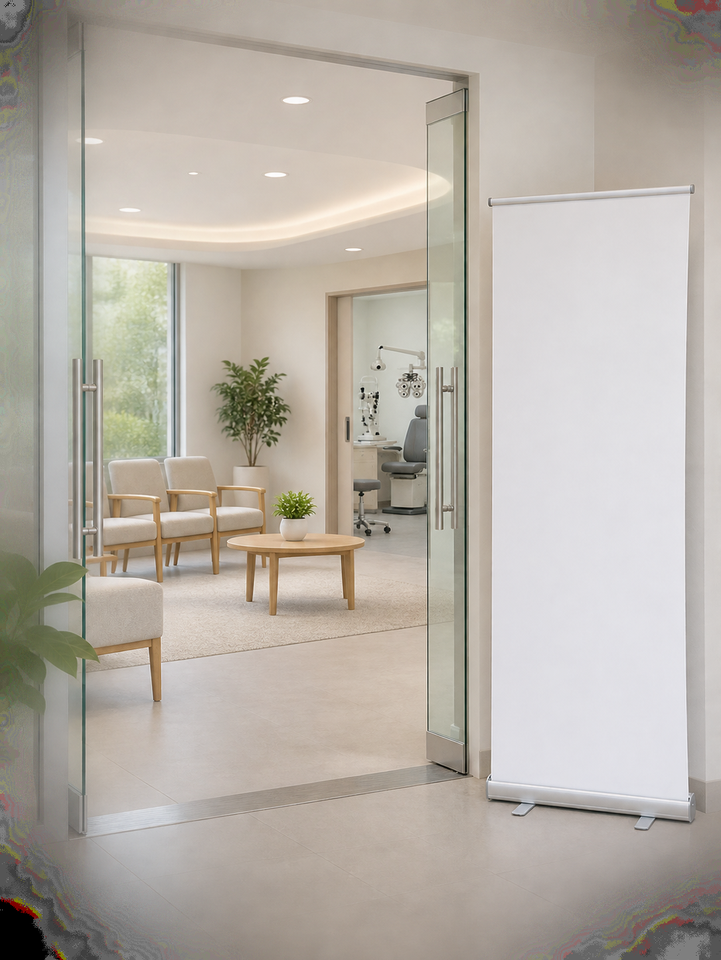
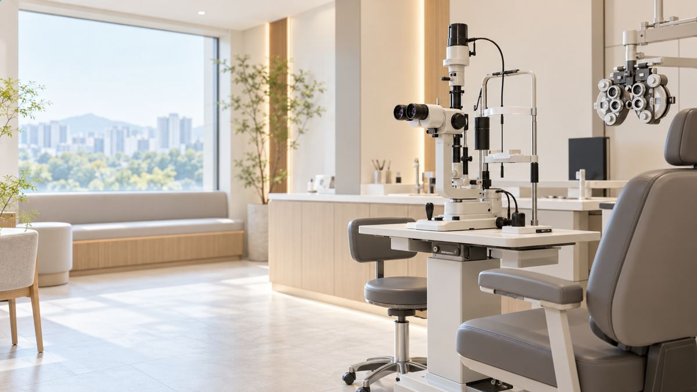
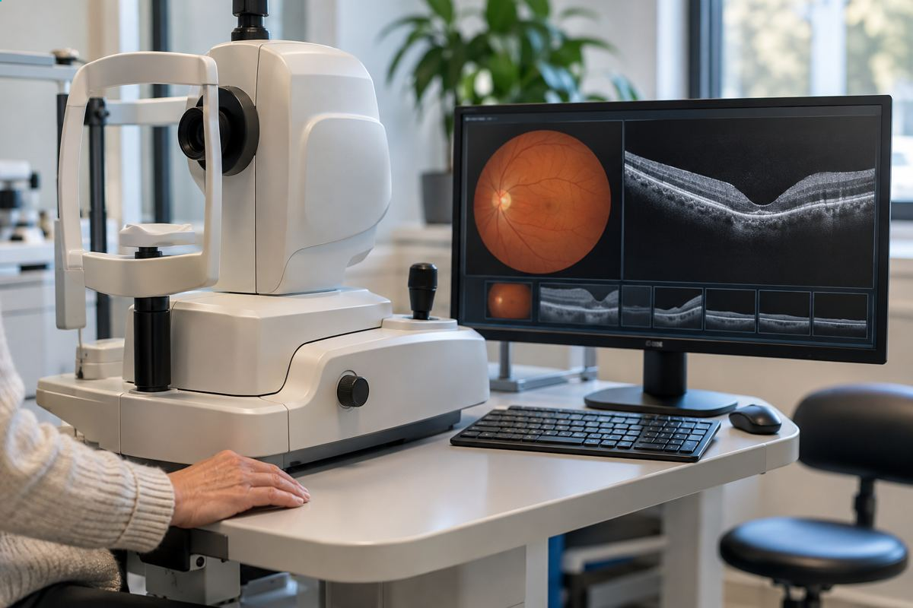
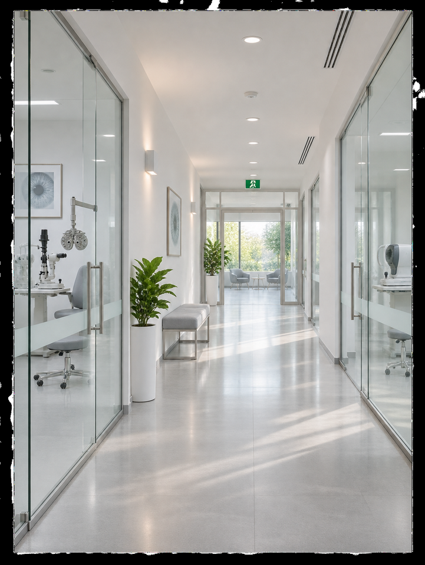

수술부터 2주 후까지 솔직 후기
- 망**
- 수술일 2026.07.23
리뷰 내용
- 교정전
- 교정후 1.2 1.2
오래 써 온 안경과 렌즈가 운동 중에 번거로웠어요. 매일 아침 렌즈를 준비하는 일도 줄이고 싶어 교정수술을 알아봤습니다.
여러 병원의 상담 내용을 비교한 뒤 자세히 설명해 준 곳을 선택했어요. 클리어뷰안과그곳에서 시력교정 수술을 받기로 마음먹었어요.
(아는 사람도 먼저 수술을 받아서 더 마음이 갔어요.)

예약한 시간에 가니 정돈된 실내가 먼저 보였어요. 직원들이 접수 절차를 친절하게 알려 주어 첫 방문부터 편했습니다.
접수하자 곧 검사 순서를 안내받았어요. 오래 기다리지 않고 진행할 수 있어서 편하게 방문했습니다.
수술 전 준비를 했어요

손목시계와 장신구를 빼고 가져온 짐도 정리했어요. 수술실에 들어가기 전 모두 개인 보관함에 넣었습니다.
휴대폰을 보관하고 준비된 수술복으로 갈아입었어요. 곧 시작한다는 게 실감 나면서 그제야 조금 떨리더라고요.
태블릿으로 진행 과정을 확인했어요

시작하기 전에 담당 의료진의 설명 영상을 태블릿으로 봤어요. 작은 절개를 이용하는 교정 방식과 진행 순서를 자세히 알려 주었습니다.
설명은 알아듣기 쉬웠어요. 다만 세부 과정을 하나씩 듣다 보니 생각보다 고려할 점이 많은 수술이라는 느낌에 조금 겁도 났습니다.
궁금한 점을 바로 물어보고 답을 들으니 안심이 됐어요.
차례가 되어 수술을 받았어요

수술실에 들어서니 다시 떨렸어요. 진행 순서를 조용히 설명해 주셔서 그 말에 맞추어 움직였습니다.
들어가기 전에 안약을 몇 차례 넣었어요. 눈을 감은 채 십 분쯤 쉬었다가 수술실로 이동했습니다. 안내를 따라 수술실로 들어갔어요.
수술실에 머문 시간이 예상보다 짧았어요. 제가 느끼기에는 대략 십 분 정도 지나 끝난 것 같았습니다.
다만 인터넷 후기엔 "하나도 안 아프다"는 글이 많았는데, 저는 솔직히 좀 아팠어요. 저는 통증이 느껴져 솔직히 힘들었어요.
견딜 수 없을 정도는 아니었어요. 그래도 눈에 무언가 닿는 감각과 아픈 느낌은 분명히 있었습니다.
아픔을 느끼는 정도는 각자 다르겠지만 저는 예민한 편이었어요. 미리 어느 정도 불편이 있을 수 있다고 생각하니 덜 당황했습니다.
수술 뒤에는 안내받은 대로 관리했고
마친 뒤에는 점안 순서와 생활 중 주의할 일을 들었어요. 집에 돌아가서도 확인할 수 있도록 내용을 다시 짚어 주셨습니다.
설명 자료를 종이로 받아 와서 집에서 천천히 다시 읽을 수 있었어요.
정해진 점안 시간을 지키고 눈에 손이 가지 않도록 주의하라는 설명을 반복해서 들었습니다.
처음 며칠 동안은 마르는 느낌 때문에 인공눈물을 자주 넣었어요. 시간이 지나자 눈을 뜨고 있는 게 조금씩 수월해졌습니다.
2주 뒤 경과 확인을 받았어요
작은 생활용품도 받았어요.
경과를 확인하러 이 주 만에 다시 갔어요. 그날 측정한 양쪽 눈의 시력은 각각 1.2 정도였습니다.
회복이 잘 진행되고 있다고 설명받아 안심했어요. 진료를 마칠 때에는 병원에서 선물로 받은 물건도 유용하게 쓰고 있어요.
받은 텀블러에 병원 이름이 작게 적혀 있어 귀여웠어요!
마무리하며 챙겨 주신 선물에 수술 뒤 관리까지 생각해 준다는 느낌이 들었어요.
마지막으로
알아보는 시간이 길었던 만큼 걱정도 쌓였어요. 현재는 수술 뒤 달라진 생활에 만족하며 지내고 있습니다.
아침마다 안경부터 더듬어 찾던 습관이 사라졌어요. 렌즈를 끼고 빼던 준비 과정도 줄어든 게 가장 크게 느껴졌습니다.
검사부터 회복 진료까지 순서가 이어져 편했어요. 설명을 들은 뒤 궁금한 내용을 더 물을 수 있었던 점도 만족스러웠습니다.
제 경우에는 수술 중 통증이 전혀 없지는 않았어요.
아팠던 시간과 수술 자체는 짧게 지나갔어요. 지금 제게는 안경을 챙기지 않고 지내는 편리함이 더 크게 다가옵니다.
시력교정을 생각한다면 우선 눈 상태부터 확인해 보세요. 상담에서 각 방법의 조건과 회복 과정을 이해한 뒤 결정하는 것이 좋겠습니다.
출처 : 환자 블로그 후기
- 교정전
- 교정후 1.2 1.2